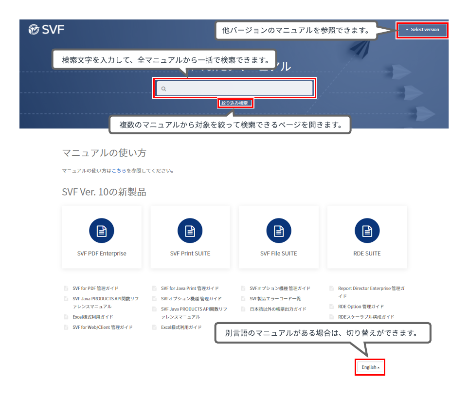
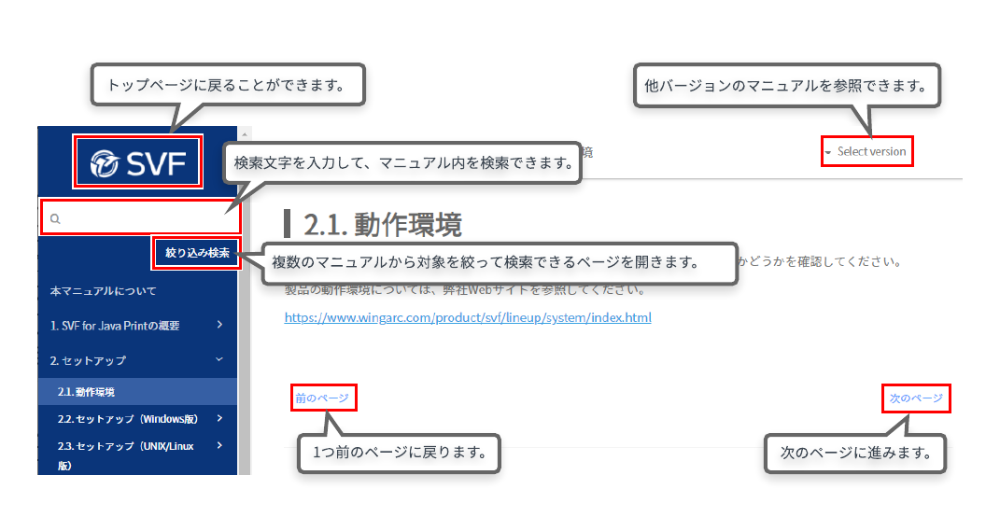
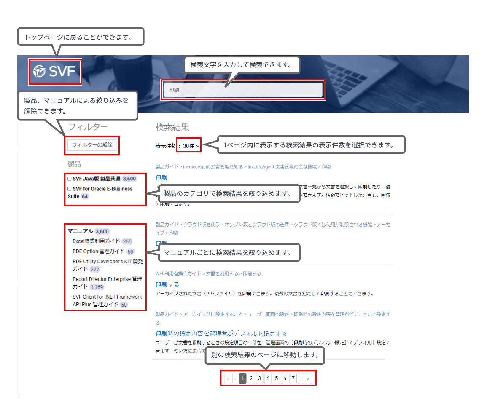

マニュアルの使い方（オンライン版）
ここでは、オンライン版のマニュアルの使い方について説明します。
トップページでの操作
トップページでは次の操作ができます。

トップページには、検索ボックスに文字を入力して全マニュアルからの検索結果を一覧に表示する簡易的な検索方法と、絞り込み検索のページを開いて検索を実行する方法があります。
各マニュアルページでの操作
トップページから各マニュアルを開くと、次の操作ができます。

各マニュアルのページには、検索ボックスに文字を入力して現在開いているマニュアルからの検索結果を一覧に表示する簡易な検索方法と、絞り込み検索のページを開いて検索を実行する方法があります。
検索について
トップページおよび各マニュアルページの検索ボックスでの検索について説明します。
AND検索をする場合、単語を全角スペース、または半角スペースで区切って入力します。
検索文字をダブルクォーテーションで囲むと完全一致検索ができます。
検索文字が半角ハイフンで始まる場合は、完全一致検索で検索できます。
OR検索は対応していません。
検索結果はヒット箇所がハイライト表示されます。
絞り込み検索ページでの操作
絞り込み検索は複数のマニュアルから対象を絞ることができる検索です。次の操作ができます。

絞り込み検索のページでは、検索の対象とするマニュアルを選べます。
検索結果から目的のページを開くときは別タブで開くため、検索結果がリフレッシュされることはありません。
参考
左領域の製品カテゴリとマニュアル名に表示されている数字は、検索文字列が含まれる検索インデックスのレコード数です。